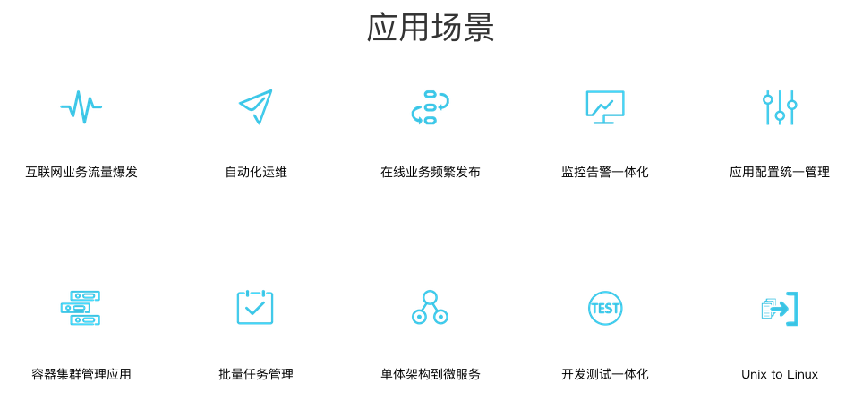

微服务介绍
微服务架构
微服务架构是一项在云中部署应用和服务的新技术。大部分围绕微服务的争论都集中在容器或其他技术是否能很好的实施微服务，而红帽说API应该是重点。
微服务可以在“自己的程序”中运行，并通过轻量级设备与HTTP型API进行沟通”。关键在于该服务可以在自己的程序中运行。通过这一点我们就可以将服务公开与微服务架构（在现有系统中分布一个API）区分开来。在服务公开中，许多服务都可以被内部独立进程所限制。如果其中任何一个服务需要增加某种功能，那么就必须缩小进程范围。在微服务架构中，只需要在特定的某种服务中增加所需功能，而不影响整体进程。
我们之所以能够知道"微服务"这个词，要感谢2014年3月Martin Fowler所写的一篇文章。文章中他提到："该微服务的架构特点是要开发一种独立的应用作为一套微小服务。各自运行在自己独立的进程中，并与其它轻量级装置进行沟通，通常是HTTP型API。这些服务都是建立在业务能力的基础上，并以全自动化开发设备作为保障独立运行。"
概念
微服务不需要像普通服务那样成为一种独立的功能或者独立的资源。定义中称，微服务是需要与业务能力相匹配，这种说法完全正确。不幸的是，仍然意味着，如果能力模型粒度的设计是错误的，那么，我们就必须付出很多代价。如果你阅读了Fowler的整篇文章，你会发现，其中的指导建议是非常实用的。在决定将所有组件组合到一起时，开发人员需要非常确信这些组件都会有所改变，并且规模也会发生变化。服务粒度越粗，就越难以符合规定原则。服务粒度越细，就越能够灵活地降低变化和负载所带来的影响。然而，利弊之间的权衡过程是非常复杂的，我们要在配置和资金模型的基础上考虑到基础设施的成本问题。
现状
微服务作为一项在云中部署应用和服务的新技术已成为当下最新的热门话题。但大部分围绕微服务的争论都集中在容器或其他技术是否能很好的实施微服务，而红帽说API应该是重点。
企业和服务提供商正在寻找更好的方法将应用程序部署在云环境中，微服务被认为是未来的方向。通过将应用和服务分解成更小的、松散耦合的组件，它们可以更加容易升级和扩展，理论上是这样。
特点
微服务的基本思想在于考虑围绕着业务领域组件来创建应用，这些应用 可独立地进行开发、管理和加速 。在分散的组件中使用微服务云架构和平台，使部署、管理和服务功能交付变得更加简单。
微服务是利用组织的服务投资组合，然后基于业务领域功能分解它们，在看到服务投资组合之前，它还是一个业务领域。
微服务这一概念出现于2012年，是因软件作者Martin Fowler而流行，他承认这并没有精确地定义出这一架构形式，虽然围绕业务能力、自动化部署、终端智能以及语言和数据的分散控制有一些常见的特性。
微服务架构开发工具
微服Seneca是构建务框架的工具，然后把它们构建到测试和部署的devops工作流中。构建和部署基于服务的应用程序都很好，但却无法维护，这一点很折磨人。还要在服务周围实现一些 持续交付模型的形式，然后使用它来管理并发布更新——这是一个比编写代码理棘手的问题。
使用微服务构建现代化应用程序是很有意义的，因为它让你既利用了扩展横向扩展架构，也利用纵向扩展架构；还额外得到API的组合，且在整个业务中可重复利用。可能，每一分钟构都在交付新服务，这样你就必须拥有一个敏捷的且响应的应用程序平台，这一平台一直在不断改进中。
其它

-
网惚蜂巢：https://c.163.com/product/service
- 01 空间逻辑隔离：在不同空间内部署同样应用过程相同，运行环境通过空间逻辑隔离。适用于测试、联调及开发环境的部署。
- 02 服务注册发现：服务创建后，可以主动发现运行的服务，其他的服务可以通过服务的名称和端口来使用服务。
- 03 服务有状态：通过挂载数据盘，绑定公网 IP，实现有状态服务。
- 04 灰度升级：支持灰度升级，实现应用新老版本之间的平滑过渡。
- 05 负载均衡：外部访问请求随机分配给副本处理。外部进入的流量可以负载均衡进行分流。
- 06 错误恢复：在副本运行出现错误时，可以自动重启或者快速迁移，以修复错误状态。
-
完善的 DevOps 工具链
- 提供了一键部署、持续集成、监控告警以及日志的收集管理系统，全面加速产品迭代。
-
先进的微服务架构
- 提供了服务发现、服务编排等功能，同时提供了应用性能监控，有效提高系统可用性。
-
稳定的基础设施
- 稳定可靠的基础设施，承载网易98%互联网产品，久经考验，值得信赖。